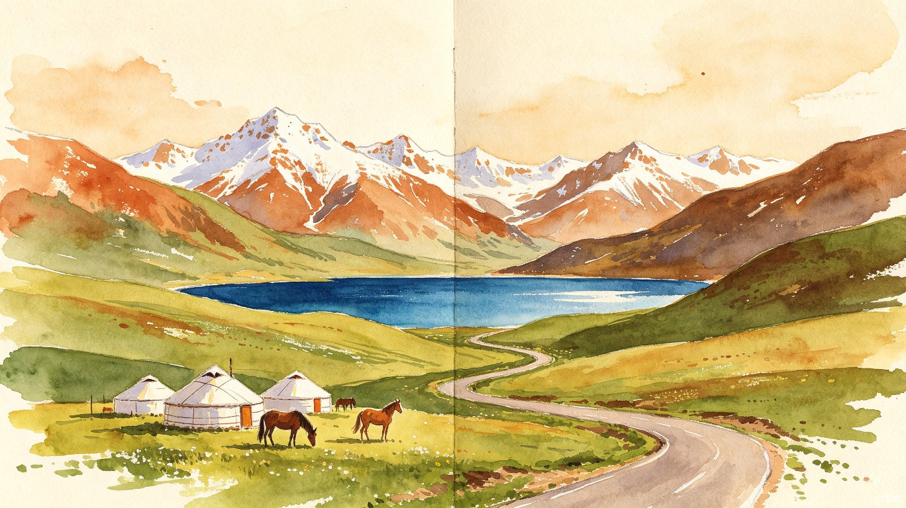
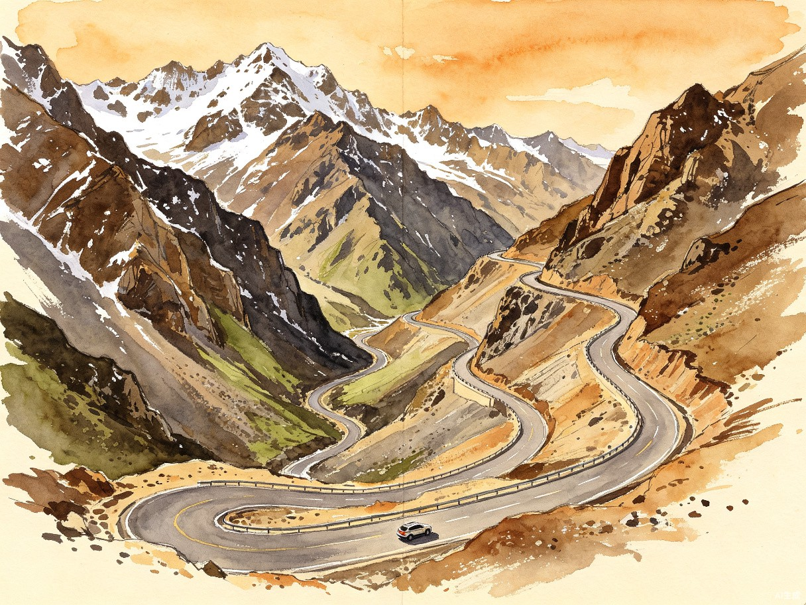
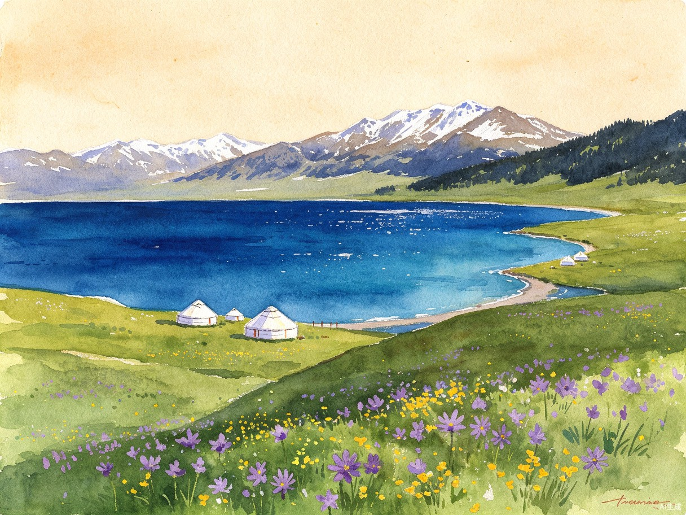

PLAN C-R · 反向深度版
新疆伊犁环线
自驾手帐
独库公路 · 那拉提 · 伊宁 · 果子沟 · 赛里木湖星空营地
2026.08.02(日) — 08.07(五) ｜ 6天5晚 ｜ 乌鲁木齐起止
1,500
总里程 km
6
天
1
晚星空营地
15h+
日照时长
路线总览
Ili Loop · Reverse Deep Edition
D2独库公路 / D5返程
D3 那拉提→伊宁
D4 伊宁→果子沟→赛湖
主要停靠点
方案C-R反向路线：D1在乌鲁木齐休整，D2先走独库公路北段至那拉提（风险前置，封了立刻切Plan C），D3那拉提→伊宁速览喀赞其，D4经果子沟至赛里木湖住星空营地（看日落+星空），D5环湖北岸后G30返乌鲁木齐，D6返程。
逐日行程
Day by Day Journal
14:00
到达乌鲁木齐地窝堡国际机场，取行李。8月旺季机场人流量大，建议提前在租车APP（神州/一嗨）上完成选车、上传驾照、支付，到达后直接取钥匙，避免现场排队办手续
14:30
机场租车中心取车。强烈建议预订SUV（通过性好，独库公路弯多路窄）。取车时检查轮胎（含备胎）、刹车、灯光，拍照留证。酒店有免费接送机，取车后可直接开往酒店
15:00
入住乌鲁木齐机场美居酒店（已预订，头屯河区中亚北路138号，免费接送机）。放行李休整。酒店位于机场附近，方便明天07:00准时出发走独库
15:30
国际大巴扎：世界上最大的巴扎（集市），伊斯兰建筑风格，免费入场（需身份证过安检）。下午4-5点光线最好，民族歌舞表演多。可购买干果、丝巾、手工艺品。丝绸之路塔登顶50元，建议上去俯瞰
17:30
红山公园：乌鲁木齐地标，免费入园。爬10分钟到红山塔，拍乌鲁木齐全景告别照
19:00
晚餐：领馆巷美食街。艾力江和田馕坑肉、烤包子、羊肉串、手抓饭一站吃全，人均30-50元
21:00
回酒店，采购明天路上的物资：一箱矿泉水、零食、巧克力。检查离线地图是否下载好。今晚必须早睡，明天是全程最关键的独库公路日480km！
为什么住机场美居酒店而不是市中心？
① 明天D2是全程最关键日，07:00必须准时出发走独库，住机场附近省时省力
② 美居酒店已预订且有免费接送机，取车还车都方便
③ 8月2日是周日，次日（周一）出发走独库——周一独库车最少，是最佳选择
④ 到达当天需要取车、采购物资、检查车况，不宜赶路
⑤ 下午半天逛大巴扎+红山公园+领馆巷吃饭，行程饱满不浪费
① 明天D2是全程最关键日，07:00必须准时出发走独库，住机场附近省时省力
② 美居酒店已预订且有免费接送机，取车还车都方便
③ 8月2日是周日，次日（周一）出发走独库——周一独库车最少，是最佳选择
④ 到达当天需要取车、采购物资、检查车况，不宜赶路
⑤ 下午半天逛大巴扎+红山公园+领馆巷吃饭，行程饱满不浪费
今晚必做：独库公路预约确认！
明天（8/3周一）走独库公路北段，必须提前1-7天通过「新疆交警」微信公众号免费预约。务必预约8:00-10:00时段（全天最顺畅，周一车最少），入口选「独山子」南行。提前7天即7/27就预约！今晚再次确认预约码是否到账。未预约行驶罚款200元、记1分。
明天（8/3周一）走独库公路北段，必须提前1-7天通过「新疆交警」微信公众号免费预约。务必预约8:00-10:00时段（全天最顺畅，周一车最少），入口选「独山子」南行。提前7天即7/27就预约！今晚再次确认预约码是否到账。未预约行驶罚款200元、记1分。
住宿（已预订）
乌鲁木齐机场美居酒店 · 免费接送机
酒店地址
头屯河区中亚北路138号
明日重点
全程最关键日 · 独库公路480km
出发时间
明日 07:00 准时出发
今日美食推荐 · 领馆巷
- 馕坑肉：整块肉在馕坑中烤制，外焦里嫩
- 烤包子：馕坑烤制，外酥里嫩，肉香扑鼻
- 烤羊肉串：正宗新疆烤法，领馆巷最集中
- 手抓饭：羊肉、胡萝卜、洋葱与大米同焖

Duku Highway · 一天经历四季
07:00
早餐后准时从美居酒店出发！沿G30连霍高速西行约137km前往独山子（独库北入口）。这是全程最关键的一天，必须早出发，赶在8:00-10:00预约时段进入独库
08:30
到达独山子（独库公路北入口）。加油+核销预约码——这是独库前最后一个补给点，必须加满油！凭「新疆交警」公众号预约码核销通行。仅7座及以下车辆可通行
09:00 - 13:00
独库公路北段（独山子→那拉提，约280km）
独山子 → 沿G217南行独库北段 → 哈希勒根达坂（海拔3390m，可能遇雪！带厚外套，防雪长廊拍照）→ 乔尔玛（烈士陵园致敬修路牺牲官兵+午餐）→ G217/G218交汇 → 右转G218西行20km → 那拉提
限速40-60km/h，区间测速全覆盖。山路弯多，严禁弯道超车。一天经历四季：戈壁→草原→森林→雪山→达坂垭口。两司机轮换驾驶！
独山子 → 沿G217南行独库北段 → 哈希勒根达坂（海拔3390m，可能遇雪！带厚外套，防雪长廊拍照）→ 乔尔玛（烈士陵园致敬修路牺牲官兵+午餐）→ G217/G218交汇 → 右转G218西行20km → 那拉提
限速40-60km/h，区间测速全覆盖。山路弯多，严禁弯道超车。一天经历四季：戈壁→草原→森林→雪山→达坂垭口。两司机轮换驾驶！
12:00
乔尔玛烈士陵园（距独山子约150km）。168位筑路英雄长眠于此，独库公路必致敬点。停留30分钟，献一束野花。旁边小镇午餐休整
13:30
乔尔玛出发，继续沿G217南行至G217/G218交汇处，右转G218西行约20km到达那拉提。这段G218沿巩乃斯河谷，风光秀美
15:00
到达那拉提，入住那拉提空中草原漫心酒店（已预订，需改日期至8/3，那拉提街220号G218旁）。独库走完了！最不确定的环节已经解决，后面稳了
16:00
休整后，下午可在那拉提镇周边逛逛，适应海拔（那拉提镇约1800m）。导航搜"那拉提空中草原自驾入口"，不要搜"主集散中心"（否则苦等区间车）。今天不进景区深度游，明天上午再逛
19:00
晚餐：那拉提镇哈萨克餐馆。手抓肉、奶茶、马奶子。独库走完的庆祝晚餐！
21:30
草原日落（约21:00落日）。今晚早睡恢复体力，明天上午逛那拉提景区后出发去伊宁
独库公路预约全攻略（C-R最关键操作！）：
① 预约渠道：「新疆交警」微信公众号（免费预约）
② 入口选择：选「独山子」南行（北段入口，从乌鲁木齐方向过来）
③ 时段选择：务必选8:00-10:00时段（第一时段，全天最顺畅，车流最少）
④ 预约时间：提前1-7天预约，提前7天即7/27就预约！旺季热门时段提前3天可能抢空
⑤ 8/3是周一（工作日），独库车最少的一天——七八月周末单日车流可达1.5万辆以上，是工作日2-3倍
⑥ 避免10:00-14:00时段——这是全天最堵时段，乔尔玛段旺季日堵5小时是常态
⑦ 未预约罚款：行驶罚款200元、记1分
⑧ 导航分段搜索：分段输入"独山子→乔尔玛→那拉提"，不要直接搜"独库公路"（会被导上高速）
① 预约渠道：「新疆交警」微信公众号（免费预约）
② 入口选择：选「独山子」南行（北段入口，从乌鲁木齐方向过来）
③ 时段选择：务必选8:00-10:00时段（第一时段，全天最顺畅，车流最少）
④ 预约时间：提前1-7天预约，提前7天即7/27就预约！旺季热门时段提前3天可能抢空
⑤ 8/3是周一（工作日），独库车最少的一天——七八月周末单日车流可达1.5万辆以上，是工作日2-3倍
⑥ 避免10:00-14:00时段——这是全天最堵时段，乔尔玛段旺季日堵5小时是常态
⑦ 未预约罚款：行驶罚款200元、记1分
⑧ 导航分段搜索：分段输入"独山子→乔尔玛→那拉提"，不要直接搜"独库公路"（会被导上高速）
独库公路通行要点：
① 北段实行预约制，每车每天只能预约一个时段，爽约超3次取消全年资格
② 分段通行时间：北段6:00-21:00，中段7:00-20:00，夜间全封闭
③ 哈希勒根达坂海拔3390m，盛夏也可能下雪，必须带冲锋衣/薄羽绒
④ 深山路段无手机信号，提前下载离线地图
⑤ 遇转场羊群熄火等待，切勿冲撞（赔偿超1500元/只）
⑥ 油箱必须半箱以上——独库公路全程仅5个加油站，乔尔玛到巴音布鲁克之间无补给
⑦ 两司机轮换：山路弯多限速40-60，480km单人不安全，务必轮换
① 北段实行预约制，每车每天只能预约一个时段，爽约超3次取消全年资格
② 分段通行时间：北段6:00-21:00，中段7:00-20:00，夜间全封闭
③ 哈希勒根达坂海拔3390m，盛夏也可能下雪，必须带冲锋衣/薄羽绒
④ 深山路段无手机信号，提前下载离线地图
⑤ 遇转场羊群熄火等待，切勿冲撞（赔偿超1500元/只）
⑥ 油箱必须半箱以上——独库公路全程仅5个加油站，乔尔玛到巴音布鲁克之间无补给
⑦ 两司机轮换：山路弯多限速40-60，480km单人不安全，务必轮换
C-R保险策略：如果D2独库封路怎么办？
这正是C-R方案的核心价值——把独库放在最前面（D2），封了立刻切换到Plan C（先赛湖后独库）！
① 出发前查「新疆交警」微博确认路况
② 如果独库封路：立刻切Plan C——D2改为乌市→G30→赛里木湖（550km），D3赛湖→果子沟→伊宁，D4伊宁→那拉提，D5那拉提→独库→乌市
③ 因为D2是行程第二天，切换零成本——只需改酒店日期（那拉提漫心酒店改到D4，赛湖营地改到D2）
④ 这就是"先独库=保险"的精髓：风险前置，封了有充足时间切换，不会像Plan C那样D5才发现独库封路（此时已无路可退）
这正是C-R方案的核心价值——把独库放在最前面（D2），封了立刻切换到Plan C（先赛湖后独库）！
① 出发前查「新疆交警」微博确认路况
② 如果独库封路：立刻切Plan C——D2改为乌市→G30→赛里木湖（550km），D3赛湖→果子沟→伊宁，D4伊宁→那拉提，D5那拉提→独库→乌市
③ 因为D2是行程第二天，切换零成本——只需改酒店日期（那拉提漫心酒店改到D4，赛湖营地改到D2）
④ 这就是"先独库=保险"的精髓：风险前置，封了有充足时间切换，不会像Plan C那样D5才发现独库封路（此时已无路可退）
独库预约
「新疆交警」公众号 · 独山子入口 · 8:00-10:00
住宿（已预订·需改日期8/3）
那拉提空中草原漫心酒店 · G218旁
最高海拔
哈希勒根达坂 3390m
车型限制
仅7座及以下客车
今日美食推荐
- 手抓肉：清炖羊肉配皮牙子（洋葱），草原上的硬菜
- 哈萨克奶茶：咸味砖茶加奶，配馕和黄油
- 马奶子：微酸微醺的发酵马奶，草原限定
- 风干肉：牛肉风干后炒制，嚼劲十足
08:00
上午逛那拉提景区（昨天独库太累，今天上午轻松游览空中草原）。导航搜"那拉提空中草原自驾入口"，不要搜"主集散中心"。自驾票线上抢每日定点放票，提前在"游新疆"小程序购买。门票95元+区间车60元≈155元
08:30 - 10:30
空中草原：海拔2200m，三面雪山环抱，巩乃斯河穿流而过。天云台→天界台（徒步10min登顶俯瞰全景）→天牧台→游牧人家。可骑马体验（约100-200元/小时）。上午光线好、人少，游览2小时足够
11:00
退房出发，沿G218沿巩乃斯河西行前往伊宁。巩乃斯河谷风光秀美，沿途绿洲草原渐入伊犁河谷
11:30
实际驾驶约270km，但G218路况良好约3.5h。途中可在巩留/墩麻扎服务区休整。今天不赶路，悠着开
14:30
到达伊宁市，入住伊宁老城美仑酒店（已预订，斯大林街23号老城区）。酒店位于老城区，步行可达喀赞其。午餐
15:30
喀赞其民俗旅游区（免费）。伊宁最迷人的蓝色房屋聚落。维吾尔族手工艺、马车（哈迪克）50元/人巡游蓝巷、手工冰淇淋（古兰丹姆15元必尝）。巷子里随手一拍就是大片
17:30
六星街（免费）。亚历山大手风琴珍藏馆听《苹果香》，黎光街深巷拍胶片感大片。街区有俄罗斯风情建筑
19:00
晚餐：喀赞其内维吾尔族餐厅。抓饭、烤包子、手工冰淇淋（必尝）、面肺子/米肠子（伊犁特色街头小吃）
21:00
伊犁河大桥看日落（免费，约21:50日落）。8月初伊犁河谷落日极美。今晚早睡，明天是赛湖深度日
C-R与Plan C的伊宁安排对比：
① Plan C：D3从赛湖过来下午到伊宁，仅半天速览（牺牲伊宁深度游览）
② C-R：D3上午逛完那拉提后出发，下午到伊宁有充足时间逛喀赞其+六星街+伊犁河日落——伊宁游览比Plan C更从容
③ C-R优势：那拉提昨天已到，今天上午还能再逛2小时；Plan C的伊宁只有半天，C-R的伊宁有完整下午+傍晚
④ 注意：伊宁8月35°C偏热，建议下午14:00-15:00先在室内休息（喀赞其民俗村有遮阴），傍晚18:00后再去伊犁河
① Plan C：D3从赛湖过来下午到伊宁，仅半天速览（牺牲伊宁深度游览）
② C-R：D3上午逛完那拉提后出发，下午到伊宁有充足时间逛喀赞其+六星街+伊犁河日落——伊宁游览比Plan C更从容
③ C-R优势：那拉提昨天已到，今天上午还能再逛2小时；Plan C的伊宁只有半天，C-R的伊宁有完整下午+傍晚
④ 注意：伊宁8月35°C偏热，建议下午14:00-15:00先在室内休息（喀赞其民俗村有遮阴），傍晚18:00后再去伊犁河
今晚必做：赛里木湖预约！
明天（8/5）去赛里木湖，提前在「赛里木湖旅游」公众号预约自驾入园票，填车牌号。门票70元+自驾票75元=145元/人。住景区内续期到次日12点只需买一次票——这是C-R住景区内的核心优势！
明天（8/5）去赛里木湖，提前在「赛里木湖旅游」公众号预约自驾入园票，填车牌号。门票70元+自驾票75元=145元/人。住景区内续期到次日12点只需买一次票——这是C-R住景区内的核心优势！
路况
G218沿巩乃斯河 · 路况良好
住宿（已预订）
伊宁老城美仑酒店 · 斯大林街23号
那拉提门票
门票95元 + 区间车60元 ≈ 155元
明日重点
赛里木湖深度日 · 住星空营地
今日美食推荐 · 伊宁
- 抓饭：伊宁维吾尔族餐厅，羊肉胡萝卜洋葱焖饭
- 手工冰淇淋：喀赞其内古兰丹姆现做，奶味浓郁，必尝
- 面肺子/米肠子：伊犁特色街头小吃，口感独特
- 烤包子：馕坑烤制，外酥里嫩，肉香扑鼻

Sayram Lake · 大西洋最后一滴眼泪
09:00
早餐后从伊宁出发。沿G218→果子沟隧道→G30前往赛里木湖东门，全程约180km。今天不赶路，睡到自然醒，独库已经走完了全程安心
10:30
途经果子沟大桥——中国最美高速桥梁之一，双塔斜拉桥横跨峡谷，雪山为背景，极为壮观。路边有观景台可停车拍照。出果子沟隧道即上果子沟大桥
12:00
到达赛里木湖东门，扫码入园。门票70元+自驾票75元=145元/人。提前在"赛里木湖旅游"公众号预约，填车牌号，现场直接扫码入园。住景区内续期到次日12点只需买一次票——这是C-R住景区内的省钱优势
12:30 - 18:00
顺时针深度环湖南岸+西岸（约90km）
东门进 → 松树头（先爬上去看果子沟大桥全景，趁人少先上去！11点后停车场满位）→ 克勒涌珠（看天鹅）→ 点将台（俯瞰湖全景）→ 西海草原（最美一段，野花+蓝湖）→ 网红S弯（航拍机位）→ 南岸（野花+雪山倒影）→ 西岸 → 牧野星空营地
顺时针优势：拍照顺光、比较好停车、避开逆时针旅行团主流向
东门进 → 松树头（先爬上去看果子沟大桥全景，趁人少先上去！11点后停车场满位）→ 克勒涌珠（看天鹅）→ 点将台（俯瞰湖全景）→ 西海草原（最美一段，野花+蓝湖）→ 网红S弯（航拍机位）→ 南岸（野花+雪山倒影）→ 西岸 → 牧野星空营地
顺时针优势：拍照顺光、比较好停车、避开逆时针旅行团主流向
18:00
入住赛里木湖牧野星空营地（已预订，需改日期至8/5，天鹅乐水景点南250m，湖西侧景区内）。营地有哈萨克简餐，简单晚餐。营地位于湖西侧，是看日落和星空的最佳位置
20:30
傍晚看日落（约21:50日落）。赛里木湖日落是全新疆最美的日落之一，夕阳将湖面染成金色，雪山倒影涌动。住湖边才能完整体验这一刻
22:30
夜晚看星空（住湖边独家福利！）。赛里木湖无光污染，银河清晰可见，是新疆最佳观星地之一。这就是C-R的核心价值——独库走完后安心享受赛湖沉浸体验
赛里木湖深度环湖全攻略（C-R独家路线）：
① 顺时针环湖：东门进→松树头→南岸→西海草原→西岸→星空营地（D4下午）→次日北岸→东门出（D5上午）
② 住景区内只需买一次票：门票145元/人，住景区内续期到次日12点免再买票——这是C-R住景区内的核心省钱优势
③ 提前在"赛里木湖旅游"公众号预约，填车牌号，到现场直接扫码入园
④ 先去松树头：11点后停车场满位，一个车位都找不到！趁早爬上去看果子沟大桥
⑤ 选工作日：8/5周三工作日，日均1.5-2.5万人，停车自由；周末暴增，环湖车速不超20码
⑥ 导航不要搜"赛里木湖景区"，搜"赛里木湖东门"精准定位
⑦ 与Plan C对比：Plan C的赛湖是D2长途550km后到达（疲惫）；C-R的赛湖是D4到达（独库已走完，精力充沛）——C-R的赛湖体验质量更高
① 顺时针环湖：东门进→松树头→南岸→西海草原→西岸→星空营地（D4下午）→次日北岸→东门出（D5上午）
② 住景区内只需买一次票：门票145元/人，住景区内续期到次日12点免再买票——这是C-R住景区内的核心省钱优势
③ 提前在"赛里木湖旅游"公众号预约，填车牌号，到现场直接扫码入园
④ 先去松树头：11点后停车场满位，一个车位都找不到！趁早爬上去看果子沟大桥
⑤ 选工作日：8/5周三工作日，日均1.5-2.5万人，停车自由；周末暴增，环湖车速不超20码
⑥ 导航不要搜"赛里木湖景区"，搜"赛里木湖东门"精准定位
⑦ 与Plan C对比：Plan C的赛湖是D2长途550km后到达（疲惫）；C-R的赛湖是D4到达（独库已走完，精力充沛）——C-R的赛湖体验质量更高
赛里木湖海拔约2070米，湖边风力极强，体感温度比市区低8°C以上。务必穿冲锋衣或厚外套，即使是8月盛夏。紫外线极强，防晒霜+墨镜+帽子缺一不可。夜间湖边温度可降至10°C以下。景区内无加油站和充电桩，进入前确保油量充足——在伊宁加满油再出发！
门票
门票70元 + 自驾票75元 = 145元/人 · 住景区内只需买一次
住宿（已预订·需改日期8/5）
赛里木湖牧野星空营地 · 湖西侧景区内
营地位置
天鹅乐水景点南250m
环湖方向
顺时针 · 东门进 → 南岸西岸 → 次日北岸
今日美食推荐
- 手抓肉：清炖羊肉，原汁原味，赛里木湖周边哈萨克牧民家有售
- 酸奶/酸奶刨冰：手工酸奶配刨冰+砂糖，消暑佳品
- 营地简餐：星空营地提供哈萨克餐、红茶、牛肉干，简单但有味道
- 牛肉干：牧区特产，厚实有嚼劲，适合夜间观星时充饥
06:30
清晨晨雾（住湖边的独家福利！）。日出约6:30，湖面升起薄薄晨雾，雪山倒影在镜面般湖面上清晰可见。这是不住湖边的人永远看不到的景色
07:30
晨光中再次欣赏湖光山色，拍完晨雾照后环湖北岸——昨天走了南岸+西岸，今天补走北岸，完成完整环湖
09:00
北岸环湖结束，返回营地退房。12点前出园免再买票——住景区内的续期福利，务必在12:00前驶出东门
10:00
准时出发！从赛里木湖东门出，上G30连霍高速东行返回乌鲁木齐。全程566km高速，路况优良
12:30
途经精河服务区（午餐+加油）。这是途中最主要的服务区，设施齐全。油表剩1/3就开始找加油站，不要等亮灯
14:00
途经奎屯服务区（休息+上厕所）。从这里开始进入乌鲁木齐方向车流密集区，注意保持车距
16:30
到达乌鲁木齐，入住乌鲁木齐机场美居酒店（已预订，头屯河区中亚北路138号，免费接送机）。明天退房去机场仅6km，非常方便
17:30
休整后可去新疆维吾尔自治区博物馆（免费，需提前在公众号预约）。看"楼兰美女"干尸和丝路文物，游览约1.5-2小时
19:30
晚餐：大巴扎美食街或领馆巷。烤羊肉串、酸奶刨冰、干果拼盘（葡萄干、巴旦木、核桃带走当伴手礼）。全程自驾圆满结束的庆祝晚餐
C-R返程优势（vs Plan C）：
① Plan C的D5：那拉提→独库→乌市420km，要走独库（还有封路风险）+ 限速山路，7-8小时
② C-R的D5：赛湖→G30高速→乌市566km，全程高速无山路、无封路风险，6.5小时轻松到家
③ C-R把独库放在D2解决了，D5返程全程高速——这是反向走的核心优势：最难的路在最前面，返程一路坦途
④ 12点前出园免再买票：住景区内续期到次日12点，D5早上环湖北岸后12点前出东门，省下一整张门票钱
⑤ 途经精河服务区（午餐+加油）、奎屯服务区（休息），补给充足
① Plan C的D5：那拉提→独库→乌市420km，要走独库（还有封路风险）+ 限速山路，7-8小时
② C-R的D5：赛湖→G30高速→乌市566km，全程高速无山路、无封路风险，6.5小时轻松到家
③ C-R把独库放在D2解决了，D5返程全程高速——这是反向走的核心优势：最难的路在最前面，返程一路坦途
④ 12点前出园免再买票：住景区内续期到次日12点，D5早上环湖北岸后12点前出东门，省下一整张门票钱
⑤ 途经精河服务区（午餐+加油）、奎屯服务区（休息），补给充足
赛湖出园时间提醒：
住景区内续期到次日12:00，务必在12:00前驶出东门，否则需要再买一次门票（145元/人）！D5早上环湖北岸后抓紧时间，09:00前结束北岸环湖，10:00准时出发。
住景区内续期到次日12:00，务必在12:00前驶出东门，否则需要再买一次门票（145元/人）！D5早上环湖北岸后抓紧时间，09:00前结束北岸环湖，10:00准时出发。
路况
G30连霍高速 · 全程高速无山路
住宿（已预订）
乌鲁木齐机场美居酒店 · 距机场6km
出园时间
12:00前出东门 · 免再买票
服务区
精河（午餐加油）· 奎屯（休息）
今日美食推荐
- 烤羊肉串：大巴扎美食街，正宗新疆烤法
- 酸奶刨冰：手工酸奶+刨冰+砂糖+蜂蜜，消暑神器
- 馕坑肉：整块肉在馕坑中烤制，外焦里嫩
- 干果拼盘：大巴扎购买，葡萄干、巴旦木、核桃带走当伴手礼
08:00
早餐：乌鲁木齐特色早餐——烤包子+奶茶，或去领馆巷吃一顿正宗维吾尔族早餐
09:00
红山公园（如果D1没去）或金泉商城采购伴手礼。干果、薰衣草精油、民族手工艺品都是好选择
10:30
返回美居酒店，退房，整理行李。酒店距机场仅6km，非常方便
11:00
前往租车门店还车。留出充足时间，还车需验车、结算。建议提前拍好车辆各角度照片。还车前加满油（否则租车公司高价代加油）
11:30
还车完成。乘车前往地窝堡机场（约6km，20-30分钟车程）。美居酒店免费接送机
12:00
到达机场，办理值机、安检。国内航班建议提前2小时到达
14:50
航班起飞，带着满满回忆回家
如果D5下午已参观过博物馆，今天上午可以去水磨沟公园（免费，乌鲁木齐人的后花园，清泉寺+温泉）散步放松，或者去华凌市场选购玉石纪念品。美居酒店距机场仅6km，今天完全不用赶时间。
实用攻略
Practical Guide
行李清单
新疆8月昼夜温差可达20°C，采用"洋葱式穿搭"——热了脱、冷了穿。赛湖星空营地夜间温度可降至10°C以下，独库达坂3390m盛夏也可能下雪，务必带足保暖衣物
衣物
- 短袖T恤 ×3-4（乌鲁木齐白天30°C+）
- 薄卫衣/抓绒衣（山区早晚）
- 冲锋衣/薄羽绒（赛湖营地夜间、独库达坂）
- 长裤 + 短裤
- 保暖帽/防风帽（观星必备）
- 舒适运动鞋 + 凉鞋
防晒
- SPF50+防晒霜（多支）
- 墨镜（紫外线极强）
- 宽檐帽/遮阳帽
- 冰袖/防晒面罩
- 润唇膏（气候干燥）
证件
- 身份证（缺一不可）
- 驾驶证（司机本人）
- 行驶证/租车合同
- 银行卡 + 少量现金
- 边防证（如去边境地区）
电子&车载
- 充电宝（大容量）
- 车载充电器/点烟器转USB
- 手机支架（导航必备）
- 离线地图（提前下载）
- 对讲机（多车编队用）
药品&日用
- 感冒药、退烧药
- 肠胃药（饮食变化大）
- 晕车药（山路弯多）
- 创可贴、驱蚊液
- 保温杯、湿巾、纸巾
零食&水
- 矿泉水（车上常备一箱）
- 巧克力/能量棒
- 水果（沿途购买）
- 馕/饼干（长途路段备用）
自驾驾驶贴士
加油规则：所有加油站需刷身份证+人脸识别，司机本人必须到场，乘客需下车在站外等候。三证齐全（身份证、驾驶证、行驶证）才能加油。油表剩1/3就开始找加油站，不要等亮灯。优先选择中石油、中石化直营站。车内不要存放散装汽油。
限速与测速：新疆交规比内地严格得多。区间测速全覆盖——不看瞬间速度，只算起点到终点的平均车速。看到区间测速起点标志，立即降速到限速以内保持匀速。流动测速随机出没，常藏在路边草丛、桥下。常规路段40-60km/h，达坂/急弯30-40km/h。导航预估时间乘以1.5来估算实际行驶时间。
安检与检查站：进入每个城市前都要经过安检检查站，检查身份证和车内情况。加油站、景区、酒店都需要刷身份证。所有乘客必须系安全带（包括后排）。基础三证建议用防水袋统一存放，方便取用。
时差与作息：新疆使用北京时间，但实际太阳时晚约2小时。8月初日出约6:30、日落约21:50，天黑约22:20。不用太早出发，但C-R的D2独库日必须07:00出发赶预约时段。午餐1-2点，晚餐8-9点是当地节奏。景区可安排到晚上8-9点，日落前光线最佳。
导航避坑指南（90%的人踩过）：
① 不要直接搜"独库公路"——会被导上高速。分段输入"独山子→乔尔玛→那拉提"
② 不要搜"景区大门"——会被导到集散中心。搜具体入口如"赛里木湖东门""那拉提空中草原自驾入口"
③ 不要搜"那拉提景区"——搜"那拉提空中草原自驾入口"避开主集散中心
④ 提前下载离线地图，独库公路深山段无信号
① 不要直接搜"独库公路"——会被导上高速。分段输入"独山子→乔尔玛→那拉提"
② 不要搜"景区大门"——会被导到集散中心。搜具体入口如"赛里木湖东门""那拉提空中草原自驾入口"
③ 不要搜"那拉提景区"——搜"那拉提空中草原自驾入口"避开主集散中心
④ 提前下载离线地图，独库公路深山段无信号
两司机轮换（C-R特别提醒）：
C-R的D2是全程最关键日（独库480km），山路限速40-60、弯多、海拔变化大（独山子600m→哈希勒根达坂3390m→那拉提1800m），单司机全程驾驶极易疲劳。务必安排两司机轮换：建议独山子→哈希勒根达坂段由司机A开（上坡弯多），乔尔玛→那拉提段由司机B开（下坡+G218河谷）。轮换点设在乔尔玛烈士陵园（休整+致敬+午餐）。
C-R的D2是全程最关键日（独库480km），山路限速40-60、弯多、海拔变化大（独山子600m→哈希勒根达坂3390m→那拉提1800m），单司机全程驾驶极易疲劳。务必安排两司机轮换：建议独山子→哈希勒根达坂段由司机A开（上坡弯多），乔尔玛→那拉提段由司机B开（下坡+G218河谷）。轮换点设在乔尔玛烈士陵园（休整+致敬+午餐）。
美食地图
| 城市/地区 | 必吃美食 | 特色描述 | 人均参考 |
|---|---|---|---|
| 乌鲁木齐 | 馕坑肉、烤包子 | 领馆巷美食街，艾力江和田馕坑肉最出名 | 30-50元 |
| 独库途中（乔尔玛） | 简餐、泡面 | 乔尔玛小镇简餐，补给点少，自带干粮备用 | 30-50元 |
| 那拉提 | 手抓肉、奶茶、马奶子 | 草原帐篷餐厅，哈萨克牧区原汁原味 | 60-100元 |
| 伊宁 | 抓饭、烤包子、手工冰淇淋 | 喀赞其民俗区内维吾尔族餐厅，冰淇淋必尝 | 50-80元 |
| 伊宁 | 面肺子/米肠子 | 伊犁特色街头小吃，口感独特 | 15-30元 |
| 赛里木湖 | 手抓肉、酸奶刨冰 | 湖边哈萨克牧民家，清炖羊肉原汁原味 | 60-100元 |
| 赛湖星空营地 | 营地简餐、牛肉干 | 哈萨克餐、红茶、牛肉干，简单有味道 | 50-80元 |
| 乌鲁木齐 | 烤肉串、酸奶刨冰 | 国际大巴扎美食街一站吃全 | 50-100元 |
预算汇总（2人参考）
方案C-R含赛里木湖星空营地住宿（600-1200元/晚），全程已预订酒店（美居/漫心/美仑/星空营地）
| 项目 | 说明 | 费用（元） |
|---|---|---|
| 租车 | SUV × 6天（旺季约500-700元/天） | 3,000 - 4,200 |
| 油费 | 约1,500km × 9L/100km × 7.8元/L | 约 1,050 |
| 过路费 | G30高速等 | 300 - 500 |
| 住宿（已预订） | D1乌市美居 + D2那拉提漫心 + D3伊宁美仑 + D4赛湖星空营地 + D5乌市美居 | 1,900 - 3,150 |
| 餐饮 | 6天 × 2人 × 80-150元/天 | 960 - 1,800 |
| 门票 | 赛里木湖145（住景区内只买一次） + 那拉提155 × 2人 | 约 600 |
| 其他 | 骑马、零食、纪念品等 | 500 - 1,000 |
| 合计（2人·含星空营地） | 8,310 - 12,300 | |
4,155 - 6,150 元/人
人均预算参考（2人同行分摊租车油费 · 含星空营地）
出发前必做清单
提前1-2周
- 预订乌鲁木齐机场租车（SUV，旺季紧俏。建议神州/一嗨APP提前办理手续，到店秒取）
- 确认全程住宿已预订（美居/漫心/美仑/星空营地，8月为旺季，尤其赛里木湖星空营地需提前2-4周预订）
- 在"赛里木湖旅游"公众号预约自驾入园票（每日限量，填车牌号，提前3-7天）
- 下载离线地图（高德/百度地图离线包，含新疆全境，独库深山段无信号）
提前7天（7/27 最关键！）
- 预约独库公路北段通行时段（「新疆交警」公众号，提前7天即7/27预约！）
- 入口选「独山子」南行，时段选8:00-10:00（全天最顺畅，周一车最少）
- 预约那拉提景区门票（"游新疆"小程序或携程）
- 预约新疆博物馆（"新疆博物馆"公众号，节假日提前一周）
- 如需去边境地区，通过"移民局12367"微信小程序办电子边防证
- 检查车辆：轮胎（含备胎）胎纹≥3mm、刹车、防冻液、机油、灯光
出发当天（8/2）
- 确认身份证、驾驶证、行驶证/租车合同三证齐全
- 车内备一箱矿泉水 + 零食（独库段补给点少）
- 手机充满电 + 充电宝随身带
- 到达后先取车再逛大巴扎，采购明天路上的水和食物
- 再次确认独库预约码已到账（8:00-10:00时段·独山子入口）
- 今晚早睡！明天是全程最关键的独库公路日480km
方案C-R · 天气应对与动态切换指南
Weather & Dynamic Route Switching · Duku First Insurance
LIVE · 实时
实时天气预报 · 7天逐日预报
⏳
正在从 Open-Meteo 获取最新气象数据...
数据来源：Open-Meteo（内置中国气象局CMA模型）· 免费无需注册 · 每次打开页面自动获取最新预报
注意：7天预报仅覆盖未来7天。行程日期（8/2-8/7）进入7天窗口后（约7/26起），此处将显示行程当天的实时预报。当前显示的是近期预报趋势。
注意：7天预报仅覆盖未来7天。行程日期（8/2-8/7）进入7天窗口后（约7/26起），此处将显示行程当天的实时预报。当前显示的是近期预报趋势。
40天预报实测
四地天气预报汇总（8/2-8/7）· 4绿2黄0红 → 方案C-R可行！
数据来源：中央气象台 40天预报（7/15更新）· 博乐=赛湖最近城市 · 独山子=独库北入口（C-R最关键D2）
| 日期 | 乌鲁木齐 | 独山子（独库·D2关键） | 伊宁 | 博乐（赛湖·D4） | 方案C-R评估 |
|---|---|---|---|---|---|
| D1 8/2(日) | ⛅ 多云 29/17°C | ⛅ 多云 31/20°C | ⛅ 多云 35/20°C | ⛅ 多云 31/17°C | 绿灯 |
| D2 8/3(一) | ⛅ 多云 30/17°C | ⛅ 多云 32/20°C | ⛅ 多云 35/20°C | ⛅ 多云 32/18°C | 绿灯·独库好走 |
| D3 8/4(二) | ⛅ 多云 30/17°C | ⛅ 多云 31/20°C | ⛅ 多云 35/20°C | ⛅ 多云 31/17°C | 绿灯 |
| D4 8/5(三) | ⛅ 多云 29/17°C | ⛅ 多云 31/20°C | ⛅ 多云 35/20°C | ⛅ 多云 31/17°C | 黄灯·赛湖防雷暴 |
| D5 8/6(四) | ⛅ 多云 29/17°C | ⛅ 多云 31/20°C | ⛅ 多云 35/20°C | ⛅ 多云 31/17°C | 绿灯·返程好走 |
| D6 8/7(五) | ⛅ 多云 29/16°C | ⛅ 多云 31/19°C | ⛅ 多云 35/20°C | ⛅ 多云 31/17°C | 绿灯 |
预报 vs 实际温差（海拔影响极大！）
独山子32°C → 独库达坂实际约5-10°C（海拔3400m）· 博乐31°C → 赛湖湖面实际约22°C（海拔2071m）· 伊宁35°C → 那拉提草原实际约25°C（海拔1800m）
结论：四地6天全部多云、零降水预报，是8月新疆难得的稳定天气窗口。C-R方案D2独库（独山子多云无雨）+ D4赛湖（博乐多云）均可行，放心以C-R为主计划。 但40天预报仅看趋势，7天后准确率显著下降，必须随时待命切换。
独山子32°C → 独库达坂实际约5-10°C（海拔3400m）· 博乐31°C → 赛湖湖面实际约22°C（海拔2071m）· 伊宁35°C → 那拉提草原实际约25°C（海拔1800m）
结论：四地6天全部多云、零降水预报，是8月新疆难得的稳定天气窗口。C-R方案D2独库（独山子多云无雨）+ D4赛湖（博乐多云）均可行，放心以C-R为主计划。 但40天预报仅看趋势，7天后准确率显著下降，必须随时待命切换。
基于40天预报的风险评估（7/15更新 · C-R视角）
D1 8/2(日) 乌鲁木齐 — 低风险：多云29°C，适合市内游览，采购物资
D2 8/3(一) 独库公路 — 低风险（C-R最关键日！）：独山子多云32°C无雨，独库北段通行条件良好。周一工作日独库车最少，8:00-10:00走最顺畅。达坂3400m可能5-10°C，带冲锋衣即可。这是C-R的核心——独库放在D2，天气好就稳了
D3 8/4(二) 那拉提→伊宁 — 低风险：那拉提25°C适合上午逛空中草原，伊宁35°C偏热建议下午室内活动
D4 8/5(三) 赛里木湖 — 中风险：博乐多云31°C，湖面约22°C。多云光线柔和不刺眼，日落可能有晚霞，夜间云量适中可能看到部分星空。8月天山午后局地雷暴属正常
D5 8/6(四) 返程 — 低风险：G30高速全程多云无雨，566km高速返程顺畅。12点前出园免再买票
D6 8/7(五) 乌鲁木齐 — 低风险：多云29°C，适合采购返程
D1 8/2(日) 乌鲁木齐 — 低风险：多云29°C，适合市内游览，采购物资
D2 8/3(一) 独库公路 — 低风险（C-R最关键日！）：独山子多云32°C无雨，独库北段通行条件良好。周一工作日独库车最少，8:00-10:00走最顺畅。达坂3400m可能5-10°C，带冲锋衣即可。这是C-R的核心——独库放在D2，天气好就稳了
D3 8/4(二) 那拉提→伊宁 — 低风险：那拉提25°C适合上午逛空中草原，伊宁35°C偏热建议下午室内活动
D4 8/5(三) 赛里木湖 — 中风险：博乐多云31°C，湖面约22°C。多云光线柔和不刺眼，日落可能有晚霞，夜间云量适中可能看到部分星空。8月天山午后局地雷暴属正常
D5 8/6(四) 返程 — 低风险：G30高速全程多云无雨，566km高速返程顺畅。12点前出园免再买票
D6 8/7(五) 乌鲁木齐 — 低风险：多云29°C，适合采购返程
核心策略：C-R保险策略 — 先走独库，封了立刻切Plan C，零风险
方案C-R的最大优势是把独库公路（最不确定的环节）放在最前面（D2）。
如果D2独库因暴雨/泥石流封路，立刻切换到Plan C（先赛湖后独库）——因为D2是行程第二天，酒店日期可改，切换零成本。
这就是"先独库=保险"的精髓：风险前置，封了有充足时间切换。
相比Plan C（D5才走独库，封了已无路可退），C-R的风险管理更优。
方案C-R的最大优势是把独库公路（最不确定的环节）放在最前面（D2）。
如果D2独库因暴雨/泥石流封路，立刻切换到Plan C（先赛湖后独库）——因为D2是行程第二天，酒店日期可改，切换零成本。
这就是"先独库=保险"的精髓：风险前置，封了有充足时间切换。
相比Plan C（D5才走独库，封了已无路可退），C-R的风险管理更优。
| D2 8/3独库天气/路况 | 推荐策略 | 具体走法 |
|---|---|---|
| 晴好/多云 | 按原方案C-R走 | D2乌市→独山子→独库北段→那拉提（住漫心酒店），完美执行反向路线 |
| 独库部分封路 | 等放行或绕行 | 上午在独山子等放行（通常中午12点后解封）；或绕行G217→乔尔玛→G218→那拉提 |
| 独库全天封路 | 立刻切Plan C！ | D2改为乌市→G30→赛里木湖550km（住星空营地，改营地日期8/3）；D3赛湖→果子沟→伊宁；D4伊宁→那拉提（改漫心日期8/5）；D5那拉提→独库→乌市。因D2是行程第二天，酒店日期可改，切换零成本 |
| 独库+赛湖都下雨 | 走方案A | D2乌市→清水河560km；D3快速环湖→伊宁；D4伊宁→那拉提；D5那拉提→G218/G216→乌市（放弃独库） |
逐日详细指导（C-R视角）
D1 8/2(日) 乌鲁木齐休整
天气：多云 29/17°C（绿灯）
行程：14:00到达→取车→美居酒店→大巴扎(16:00-19:00)→晚餐
必做：① 确认独库预约码（8:00-10:00·独山子入口）② 查8/3独山子天气预报 ③ 采购480km长途物资（水、零食、充电宝）④ 检查车况（轮胎、备胎、机油、防冻液）⑤ 下载离线地图 ⑥ 两司机确认轮换安排
住宿：乌鲁木齐机场美居酒店（已预订）
D2 8/3(一) 乌市→独库→那拉提 480km（最关键日！）
天气：独山子多云 32/20°C → 达坂实际约5-10°C（绿灯·独库好走）
40天预报独山子多云无雨，独库北段通行条件良好。周一工作日独库车最少，8:00-10:00走最顺畅。
出发：7:00从美居酒店出发，G30高速137km到独山子（约1.5h）
独库：独山子加油+核销预约→G217南行→哈希勒根达坂(3390m)→乔尔玛(致敬+午餐)→G218西行20km→那拉提
两司机轮换：独山子→乔尔玛段A开，乔尔玛→那拉提段B开
穿衣：冲锋衣+抓绒+薄羽绒，达坂3390m可能5-10°C遇雪/冰雹
油表注意：独山子加满油！独库全程仅5个加油站
住宿：那拉提空中草原漫心酒店（已预订·需改日期8/3）
D3 8/4(二) 那拉提→伊宁 270km
天气：那拉提25°C（绿灯）· 伊宁35°C（黄灯·偏热）
上午逛那拉提空中草原2h（光线好人少），11:00出发沿G218西行。
伊宁半天攻略（14:30-21:00）：
14:30-16:30 喀赞其民俗区（免费）：坐马车巡游蓝巷50元/人，拍薄荷蓝墙面，吃古兰丹姆冰淇淋15元
16:30-18:00 六星街（免费）：亚历山大手风琴馆听《苹果香》，黎光街深巷拍胶片感大片
18:00-21:00 伊犁河大桥看日落（免费，21:00日落）
晚餐：艾勒喀斯尔餐厅（老牌维吾尔餐厅，有歌舞表演）或汉人街夜市（人均30元）
住宿：伊宁老城美仑酒店（已预订，斯大林街23号）
今晚必做：赛里木湖预约（「赛里木湖旅游」公众号，填车牌号）
D4 8/5(三) 伊宁→果子沟→赛湖 180km（赛湖深度日）
天气：博乐多云 31/17°C → 湖面实际约22/10°C（黄灯·防雷暴）
40天预报多云无雨，但8月天山山区午后易发短时强对流。多云天光线柔和不刺眼，日落可能有晚霞透光，夜间云量适中可能看到部分星空。
出发：9:00出发，G218→果子沟隧道→G30→赛湖东门，约3h
12:00入园（门票145元/人，住景区内只需买一次）
下午12:30-18:00：顺时针环湖南岸+西岸（东门→松树头→克勒涌珠→点将台→西海草原→S弯→南岸→西岸→星空营地）
住湖边营地，傍晚看日落，夜间看星空
穿衣：冲锋衣+抓绒+轻薄羽绒服，湖边夜间约10°C风大
住宿：赛里木湖牧野星空营地（已预订·需改日期8/5，天鹅乐水景点南250m）
D5 8/6(四) 赛湖→G30→乌市 566km（返程日）
天气：博乐多云 31/17°C → 乌鲁木齐多云 29/17°C（绿灯·返程好走）
40天预报全程多云无雨，G30高速566km返程顺畅。这是C-R的核心优势——独库已走完，返程全程高速无山路无封路风险。
早上6:30看晨雾（住湖边独家福利）→7:30环湖北岸→9:00退房→12点前出园免再买票→10:00出发G30
途经精河服务区（午餐+加油）、奎屯服务区（休息）
16:30到达乌鲁木齐，入住美居酒店（已预订，距机场6km）
下午可逛新疆博物馆（免费，需预约）
住宿：乌鲁木齐机场美居酒店（已预订）
D6 8/7(五) 乌鲁木齐→机场 ~6km
天气：多云 29/16°C（绿灯）
10:00退房→加满油还车→11:30到机场（6km，美居免费接送机）→14:50航班
D1 8/2(日) 乌鲁木齐休整
天气：多云 29/17°C（绿灯）
行程：14:00到达→取车→美居酒店→大巴扎(16:00-19:00)→晚餐
必做：① 确认独库预约码（8:00-10:00·独山子入口）② 查8/3独山子天气预报 ③ 采购480km长途物资（水、零食、充电宝）④ 检查车况（轮胎、备胎、机油、防冻液）⑤ 下载离线地图 ⑥ 两司机确认轮换安排
住宿：乌鲁木齐机场美居酒店（已预订）
D2 8/3(一) 乌市→独库→那拉提 480km（最关键日！）
天气：独山子多云 32/20°C → 达坂实际约5-10°C（绿灯·独库好走）
40天预报独山子多云无雨，独库北段通行条件良好。周一工作日独库车最少，8:00-10:00走最顺畅。
出发：7:00从美居酒店出发，G30高速137km到独山子（约1.5h）
独库：独山子加油+核销预约→G217南行→哈希勒根达坂(3390m)→乔尔玛(致敬+午餐)→G218西行20km→那拉提
两司机轮换：独山子→乔尔玛段A开，乔尔玛→那拉提段B开
穿衣：冲锋衣+抓绒+薄羽绒，达坂3390m可能5-10°C遇雪/冰雹
油表注意：独山子加满油！独库全程仅5个加油站
住宿：那拉提空中草原漫心酒店（已预订·需改日期8/3）
D3 8/4(二) 那拉提→伊宁 270km
天气：那拉提25°C（绿灯）· 伊宁35°C（黄灯·偏热）
上午逛那拉提空中草原2h（光线好人少），11:00出发沿G218西行。
伊宁半天攻略（14:30-21:00）：
14:30-16:30 喀赞其民俗区（免费）：坐马车巡游蓝巷50元/人，拍薄荷蓝墙面，吃古兰丹姆冰淇淋15元
16:30-18:00 六星街（免费）：亚历山大手风琴馆听《苹果香》，黎光街深巷拍胶片感大片
18:00-21:00 伊犁河大桥看日落（免费，21:00日落）
晚餐：艾勒喀斯尔餐厅（老牌维吾尔餐厅，有歌舞表演）或汉人街夜市（人均30元）
住宿：伊宁老城美仑酒店（已预订，斯大林街23号）
今晚必做：赛里木湖预约（「赛里木湖旅游」公众号，填车牌号）
D4 8/5(三) 伊宁→果子沟→赛湖 180km（赛湖深度日）
天气：博乐多云 31/17°C → 湖面实际约22/10°C（黄灯·防雷暴）
40天预报多云无雨，但8月天山山区午后易发短时强对流。多云天光线柔和不刺眼，日落可能有晚霞透光，夜间云量适中可能看到部分星空。
出发：9:00出发，G218→果子沟隧道→G30→赛湖东门，约3h
12:00入园（门票145元/人，住景区内只需买一次）
下午12:30-18:00：顺时针环湖南岸+西岸（东门→松树头→克勒涌珠→点将台→西海草原→S弯→南岸→西岸→星空营地）
住湖边营地，傍晚看日落，夜间看星空
穿衣：冲锋衣+抓绒+轻薄羽绒服，湖边夜间约10°C风大
住宿：赛里木湖牧野星空营地（已预订·需改日期8/5，天鹅乐水景点南250m）
D5 8/6(四) 赛湖→G30→乌市 566km（返程日）
天气：博乐多云 31/17°C → 乌鲁木齐多云 29/17°C（绿灯·返程好走）
40天预报全程多云无雨，G30高速566km返程顺畅。这是C-R的核心优势——独库已走完，返程全程高速无山路无封路风险。
早上6:30看晨雾（住湖边独家福利）→7:30环湖北岸→9:00退房→12点前出园免再买票→10:00出发G30
途经精河服务区（午餐+加油）、奎屯服务区（休息）
16:30到达乌鲁木齐，入住美居酒店（已预订，距机场6km）
下午可逛新疆博物馆（免费，需预约）
住宿：乌鲁木齐机场美居酒店（已预订）
D6 8/7(五) 乌鲁木齐→机场 ~6km
天气：多云 29/16°C（绿灯）
10:00退房→加满油还车→11:30到机场（6km，美居免费接送机）→14:50航班
C-R核心价值：独库封路应急预案（D2 8/3）
情况1：独库正常通车 — 按计划7:00出发，8:00-10:00时段进入独库，15:00到那拉提，完美执行C-R
情况2：独库部分封路/管制 — 上午在独山子等放行（通常中午12点后解封），或绕行G217→乔尔玛→G218→那拉提
情况3：独库全天封路 → 立刻切Plan C！ — D2改为乌市→G30→赛里木湖550km（住星空营地，改营地日期8/3）；D3赛湖→果子沟→伊宁；D4伊宁→那拉提（改漫心日期8/5）；D5那拉提→独库→乌市。因为D2是行程第二天，酒店日期可改，切换零成本
情况4：独库封路+赛湖也下雨 — 走方案A：D2乌市→清水河560km，D3快速环湖→伊宁，D4伊宁→那拉提，D5那拉提→G218/G216→乌市（放弃独库）
注意：C-R的保险价值在于D2封了能切Plan C，如果独库和赛湖同时封路则走方案A
情况1：独库正常通车 — 按计划7:00出发，8:00-10:00时段进入独库，15:00到那拉提，完美执行C-R
情况2：独库部分封路/管制 — 上午在独山子等放行（通常中午12点后解封），或绕行G217→乔尔玛→G218→那拉提
情况3：独库全天封路 → 立刻切Plan C！ — D2改为乌市→G30→赛里木湖550km（住星空营地，改营地日期8/3）；D3赛湖→果子沟→伊宁；D4伊宁→那拉提（改漫心日期8/5）；D5那拉提→独库→乌市。因为D2是行程第二天，酒店日期可改，切换零成本
情况4：独库封路+赛湖也下雨 — 走方案A：D2乌市→清水河560km，D3快速环湖→伊宁，D4伊宁→那拉提，D5那拉提→G218/G216→乌市（放弃独库）
注意：C-R的保险价值在于D2封了能切Plan C，如果独库和赛湖同时封路则走方案A
C-R的时间分配优势（vs Plan C）：
结论：C-R比Plan C在伊宁和那拉提的时间分配更从容。
Plan C：那拉提全天深度游（D4），伊宁仅半天速览（D3下午）——牺牲伊宁换那拉提
C-R：那拉提D2下午+D3上午共1.5天，伊宁D3下午完整半天——两者都兼顾
C-R的伊宁有完整下午+傍晚（喀赞其+六星街+伊犁河日落），比Plan C的伊宁速览更充分。
那拉提骑马：80-150元/小时，游牧人家附近山坡骑马看日落最佳，提前谈好"每小时多少钱+总价+含牵马费吗"，备现金（草原信号弱）
结论：C-R比Plan C在伊宁和那拉提的时间分配更从容。
Plan C：那拉提全天深度游（D4），伊宁仅半天速览（D3下午）——牺牲伊宁换那拉提
C-R：那拉提D2下午+D3上午共1.5天，伊宁D3下午完整半天——两者都兼顾
C-R的伊宁有完整下午+傍晚（喀赞其+六星街+伊犁河日落），比Plan C的伊宁速览更充分。
那拉提骑马：80-150元/小时，游牧人家附近山坡骑马看日落最佳，提前谈好"每小时多少钱+总价+含牵马费吗"，备现金（草原信号弱）
穿衣提醒（洋葱式穿搭）
D1乌鲁木齐：短袖+防晒衣，35°C防暑
D2独库：厚外套+冲锋衣+抓绒，达坂3390m可能遇雪/冰雹；备氧气瓶以防高反；两司机轮换防疲劳
D3那拉提/伊宁：短袖+薄外套，伊宁35°C防暑
D4赛里木湖：冲锋衣+抓绒+轻薄羽绒服，夜间8°C湖边风大；雨衣随身
D5返程：短袖+薄外套，G30高速舒适
全程：SPF50+防晒霜每2-3h补涂、墨镜、宽檐帽、轻便雨衣（非雨伞，雷暴时金属杆危险）
D1乌鲁木齐：短袖+防晒衣，35°C防暑
D2独库：厚外套+冲锋衣+抓绒，达坂3390m可能遇雪/冰雹；备氧气瓶以防高反；两司机轮换防疲劳
D3那拉提/伊宁：短袖+薄外套，伊宁35°C防暑
D4赛里木湖：冲锋衣+抓绒+轻薄羽绒服，夜间8°C湖边风大；雨衣随身
D5返程：短袖+薄外套，G30高速舒适
全程：SPF50+防晒霜每2-3h补涂、墨镜、宽檐帽、轻便雨衣（非雨伞，雷暴时金属杆危险）
出发前必做（基于40天预报更新 · 7/15 · C-R视角）：
① 7/15-7/25：每周看一次40天预报趋势（当前：四地全部多云无雨，利好C-R）
② 7/27最关键：提前7天预约独库公路！「新疆交警」公众号，入口选独山子，时段8:00-10:00
③ 7/26起：每日查7天天气预报（和风天气/墨迹天气），重点关注8/3独山子天气（C-R的D2独库日）
④ 7/30：第一次预判——如果7天预报显示8/3独库有雨→准备切换Plan C
⑤ 8/1最关键：查8/3独山子72小时预报，最终决定是否走独库、是否切换Plan C
⑥ 关注"新疆交警"微博获取独库公路实时路况
⑦ 8月1日确认独库公路预约是否成功（8:00-10:00时段·独山子入口）
⑧ 8月2日到达后向租车公司确认近期天气和路况，确认两司机轮换安排
⑨ 什么时候切换Plan C：出发前3天(7/30)独库有雨→切Plan C · D2到达独山子发现封路→立刻切Plan C（改酒店日期）
⑩ 全程保持灵活心态——C-R的保险价值就是封了能切，零风险
① 7/15-7/25：每周看一次40天预报趋势（当前：四地全部多云无雨，利好C-R）
② 7/27最关键：提前7天预约独库公路！「新疆交警」公众号，入口选独山子，时段8:00-10:00
③ 7/26起：每日查7天天气预报（和风天气/墨迹天气），重点关注8/3独山子天气（C-R的D2独库日）
④ 7/30：第一次预判——如果7天预报显示8/3独库有雨→准备切换Plan C
⑤ 8/1最关键：查8/3独山子72小时预报，最终决定是否走独库、是否切换Plan C
⑥ 关注"新疆交警"微博获取独库公路实时路况
⑦ 8月1日确认独库公路预约是否成功（8:00-10:00时段·独山子入口）
⑧ 8月2日到达后向租车公司确认近期天气和路况，确认两司机轮换安排
⑨ 什么时候切换Plan C：出发前3天(7/30)独库有雨→切Plan C · D2到达独山子发现封路→立刻切Plan C（改酒店日期）
⑩ 全程保持灵活心态——C-R的保险价值就是封了能切，零风险